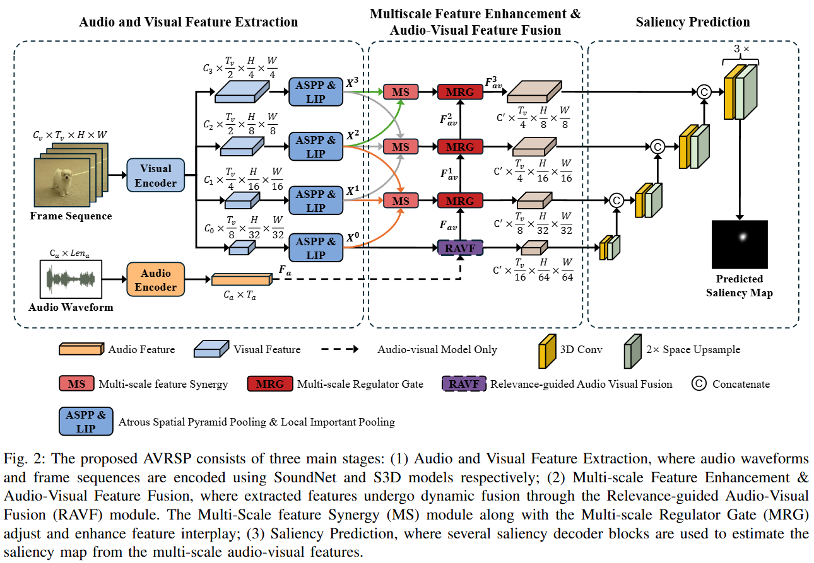
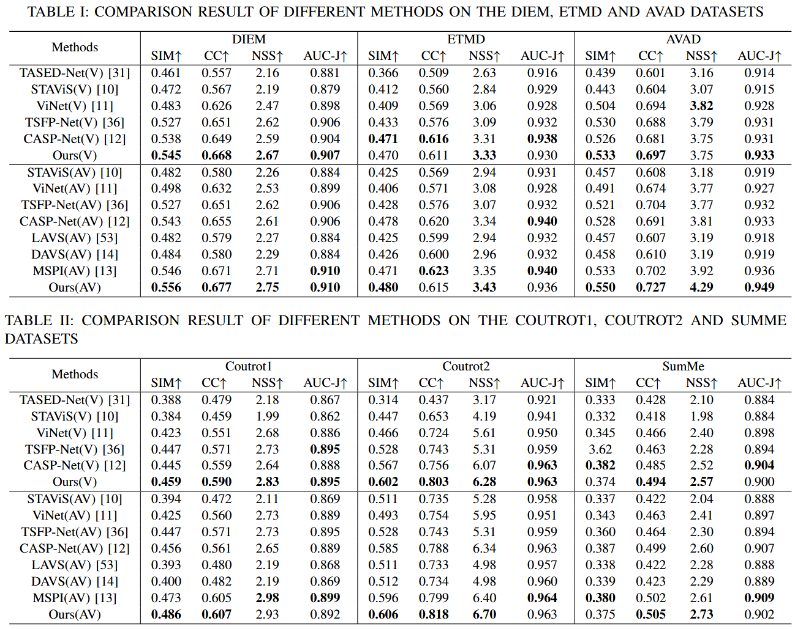

Relevance-guided Audio Visual Fusion for Video Saliency Prediction
Under Review
Abstract
-
grade Audio data, often synchronized with video frames, plays a crucial role in guiding the audience’s visual attention. Incorporating audio information into video saliency prediction task can enhance the prediction of human visual behavior. However, existing audio-visual saliency prediction methods often directly fuse audio and visual features, without evaluating the semantic relevance between them. Fusing visual features with semantically irrelevant audio (e.g., background music) will introduce noise and degrade prediction performance. To address this issue, we propose a novel Audio-Visual Relevance-guided Saliency Prediction network (AVRSP). Specifically, the Relevance-guided Audio-Visual Feature Fusion module (RAVF) dynamically adjusts the retention of audio features based on the semantic relevance between audio and visual elements, thereby refining the fusion process with visual features. Furthermore, the Multi-scale feature Synergy (MS) module integrates visual features from different encoding stages, enhancing the network’s ability to represent objects at various scales. The Multi-scale Regulator Gate (MRG) transfers crucial fusion information to visual features, thus optimizing the utilization of multi-scale visual features. Extensive experiments on six audio-visual eye movement datasets demonstrate that the proposed AVRSP network achieves superior performance to recent methods, with improvements of 1.93%, 3.05%, and 3.81% in SIM, CC, and NSS respectively.
Highlights
-
grade A Relevance-guided Audio-Visual feature Fusion module (RAVF) adaptively modulates the incorporation of audio features based on their semantic relationships with visual content.
-
grade A Multi-scale feature Synergy (MS) module aggregates visual information from various encoding layers to enhance the model's representation capability in predicting salient objects across different scales.
-
grade Through the Multi-scale Regulator Gate (MRG), the proposed network overcomes the limitation of under-utilizing multi-scale visual features in traditional decoders. MRG injects crucial fusion information into the visual feature decoding process, thereby significantly refining the decoding process and ensuring a more effective utilization of multi-scale visual information.
Network Architecture

gradeThe overall framework of our proposed method
Results


Please check our paper for detail results.
Citation